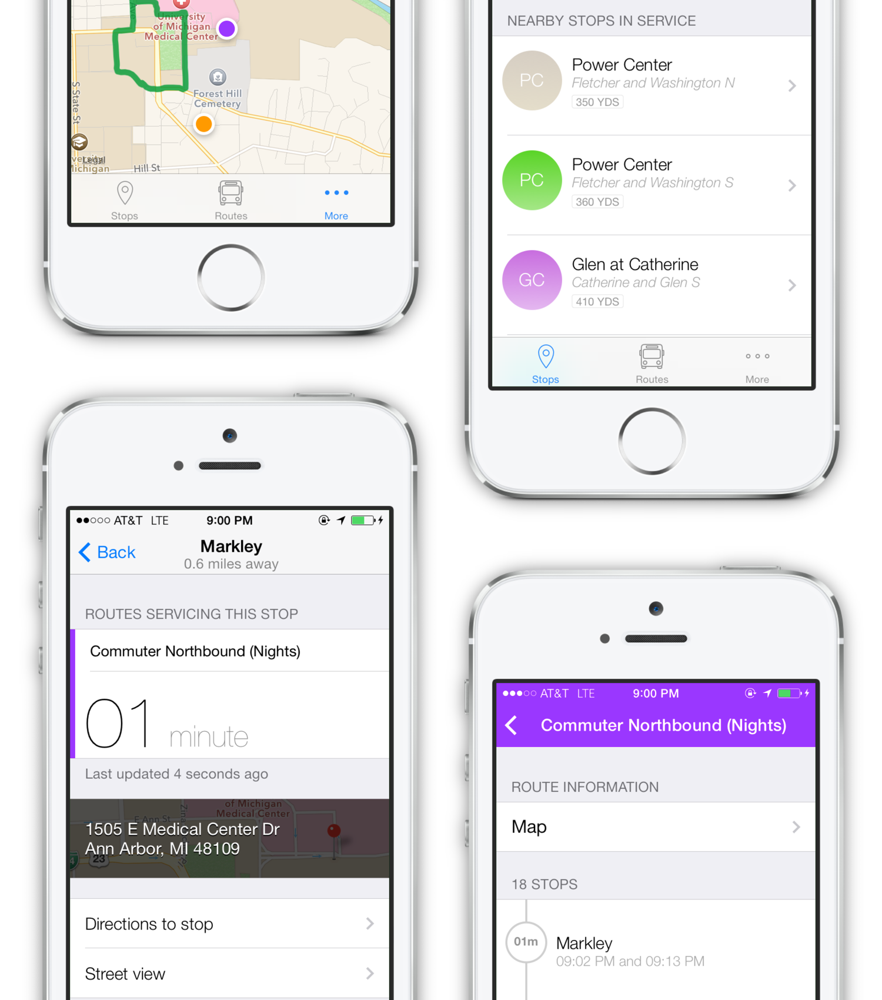

Jonah Grant is a developer and technologist who specializes in iOS development and high-level product development. Jonah is best known for his work building the technology for Belly, Inc., a digital customer loyalty platform funded to the tune of over $30mm by Andreessen Horowitz, New Enterprise Associates, 7-Eleven, Cisco, and others, while working at Lightbank Ventures under co-founder Eric Lefkofsky during high school. He was then recruited by Harper Reed, former CTO of Threadless and the 2012 Obama Campaign, to work on building the framework behind what the Chicago Tribune dubbed the "most anticipated technology startup of 2014." He's now on Twitter's iOS Platform Engineering team, working on improving an experience that millions use daily.
Before working in startups, he programmed and released nearly a dozen apps starting when he was 13 years old. Those apps included Pong - iPhone Edition, a modern version of the classic Atari arcade game that took advantage of new technologies; Walkie-Talkie 3000, a bluetooth walkie-talkie for iOS devices; App of the Day, an iPhone app that recommends one great crowdsourced app each day; and Trailers, an app for viewing previews and other information for upcoming movies that was used by former Apple CEO Steve Jobs.
His award-winning work has been featured internationally in publications including the New York Times, Forbes, TIME magazine, and the Wall Street Journal.
Jonah graduated from New Trier High School in Winnetka, Illinois in June 2014. He will be studying Computer Science the University of Colorado Boulder in Fall 2014.
I'm a developer from Chicago.
If you think we should talk, email me!
Twitter Facebook Github LinkedIn
If you think we should talk, email me!
Twitter Facebook Github LinkedIn
About me
Some things I've been involved in:
iOS Platform Engineer
San Francisco, California
2014 - Present
San Francisco, California
2014 - Present
Engineer
Chicago, Illinois
2013 - 2014
Chicago, Illinois
2013 - 2014
Worked on building a PCI-compliant drop-in Objective-C commerce library for corporate clients and an adaptable white-label iOS app around that commerce library.
Engineer
Chicago, Illinois
2013 - 2014
Chicago, Illinois
2013 - 2014
Founding Product Developer
Chicago, Illinois
2011 - 2013
Chicago, Illinois
2011 - 2013
Started Belly, Inc. while I was a freshman in high school working at
Lightbank. I built the original technology as well as advised on strategic product and business decisions to transform Belly from an idea to a company.
Other things I've made:

An iPhone app for tracking the University of Michigan's buses in real-time, viewing their estimated arrival times, and getting other data about the school's bus system that I designed and developed after visiting campus.
Powered by ReactiveCocoa and Fare, a proprietary networking library for interfacing with U-M's RESTful APIs using AFNetworking and Mantle. Built on an MVVM architecture.
MBus is available for free on the App Store and is open-sourced under the MIT License on Github.